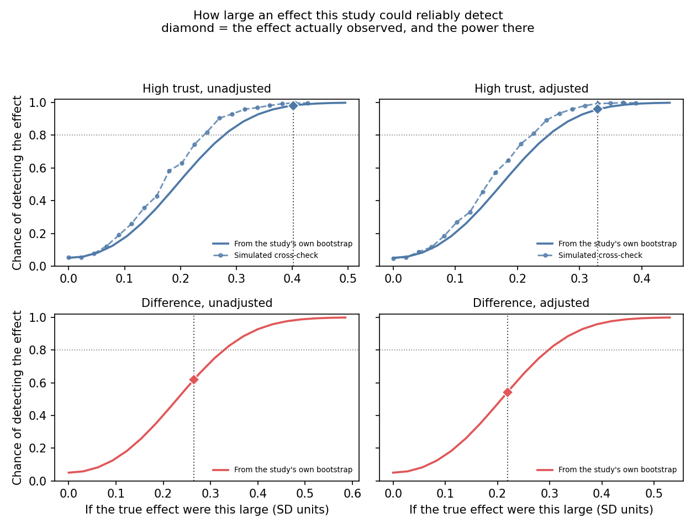
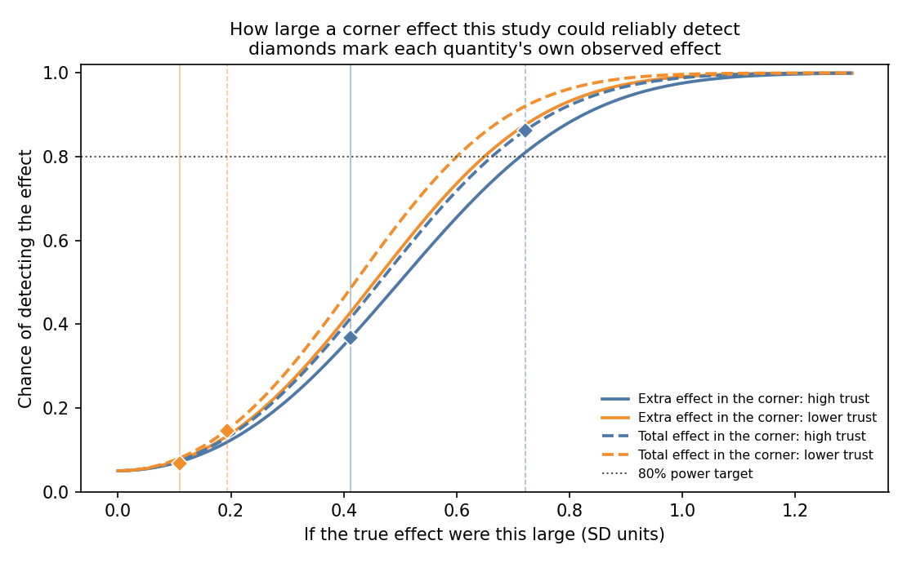

The higher-trust results are the ones this design can carry.
| Target | Observed | SE | MDE | Power | Clears |
|---|---|---|---|---|---|
| Higher trust, unadjusted | 0.402 | 0.099 | 0.277 | 98% | yes |
| Higher trust, adjusted | 0.329 | 0.089 | 0.249 | 96% | yes |
| Difference between them, unadjusted | 0.265 | 0.117 | 0.328 | 62% | no |
| Difference between them, adjusted | 0.219 | 0.106 | 0.297 | 54% | no |

| Target | Observed | MDE (analytic) | MDE (bootstrap) | Power | Clears |
|---|---|---|---|---|---|
| Corner effect, higher trust | 0.685 | 0.440 | 0.461 | 98% | yes |
| Corner effect, lower trust | 0.285 | 0.368 | 0.360 | 59% | no |
| Corner increment, higher trust | 0.397 | 0.426 | 0.445 | 72% | no |
| Corner increment, lower trust | 0.194 | 0.364 | 0.360 | 32% | no |
The MDE is computed two ways and they agree closely: a normal-approximation formula, and a simulated power curve that resamples the real data and injects a candidate true effect on top of the actual covariate distribution and residual structure. The corner effects are the better-powered quantities, since they are larger than the increments δ against essentially the same noise.

The trust-stratum estimates are identified under principal ignorability, which cannot be tested here because expert trust was never measured in the control arm. Driving the estimates to zero requires a hidden differential treatment response of −1.17 SD for the higher-trust effect and −0.52 SD for the difference between the two: large in magnitude, and opposite in sign to the mechanism under study.
Measuring expert trust before treatment estimates the missing control-arm quantity directly.